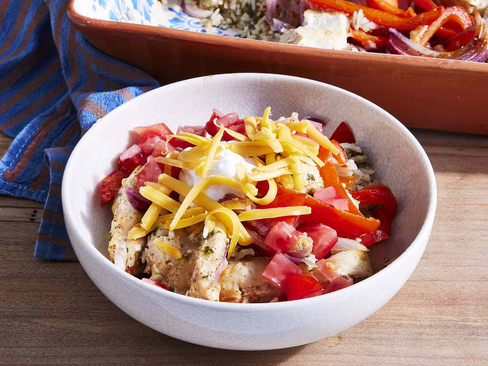

Chicken Fajita Rice Casserole

Description
This casserole of rice and chicken comes together quickly and is excellent. Don't forget to toast the rice; it's a really easy method to add flavor and a light nuttiness to the dish. Any additional toppings, such as sour cream, diced tomatoes, or shredded Cheddar cheese, are welcome.
Ingredients
- 1 ¼ cups long-grain white rice
- ½ cup chopped fresh cilantro leaves
- 2 limes, zested and juiced
- 1 ½ pounds boneless, skinless chicken breasts, cut into 1/2 inch slices
- 2 small bell peppers, thinly sliced
- 1 large red onion, thinly sliced
- 2 tablespoons fajita seasoning
- 2 tablespoons olive oil
- 1 ½ teaspoons kosher salt
- ½ teaspoon ground black pepper
- 1 ½ cups chicken broth
- 1 lime, cut into wedges
Steps
- Preheat the oven to 350 degrees F (175 degrees C).
- Add uncooked rice to a dry saucepan over medium; cook, stirring constantly, until rice is fragrant and no longer translucent, 3 to 4 minutes. Transfer to an ungreased 13- x 9-inch baking dish and stir in cilantro, lime zest, and lime juice; mix until combined.
- Place chicken, bell peppers, onion, fajita seasoning, olive oil, salt, and pepper in a large bowl and toss until chicken and vegetables are evenly coated. Transfer to baking dish and place in an even layer over rice mixture. Pour in chicken broth and cover with aluminum foil.
- Bake in preheated oven until chicken is cooked through and rice is tender, about 45 to 50 minutes.
- Remove from oven, uncover, and top with desired toppings. Serve with lime wedges.
Nutrition Facts (per serving)
- Calories: 256
- Fat: 5g
- Carbs: 30g
- Protein: 23g
Back to top of page
Return to Homepage